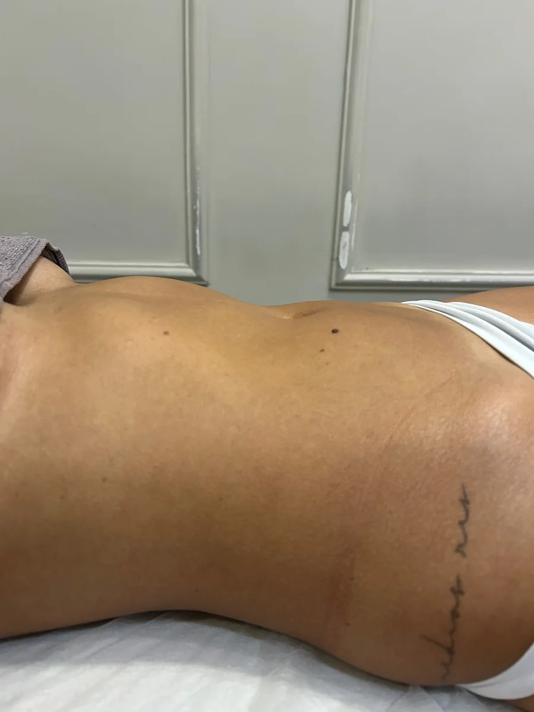
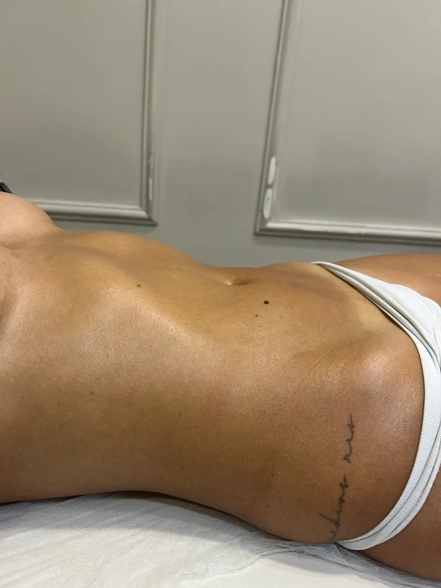
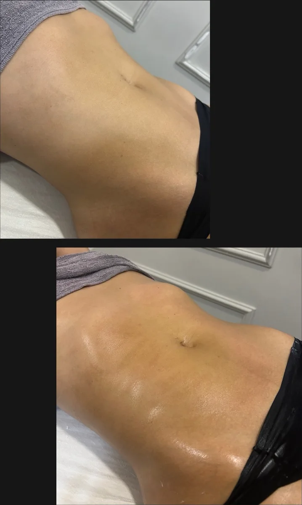
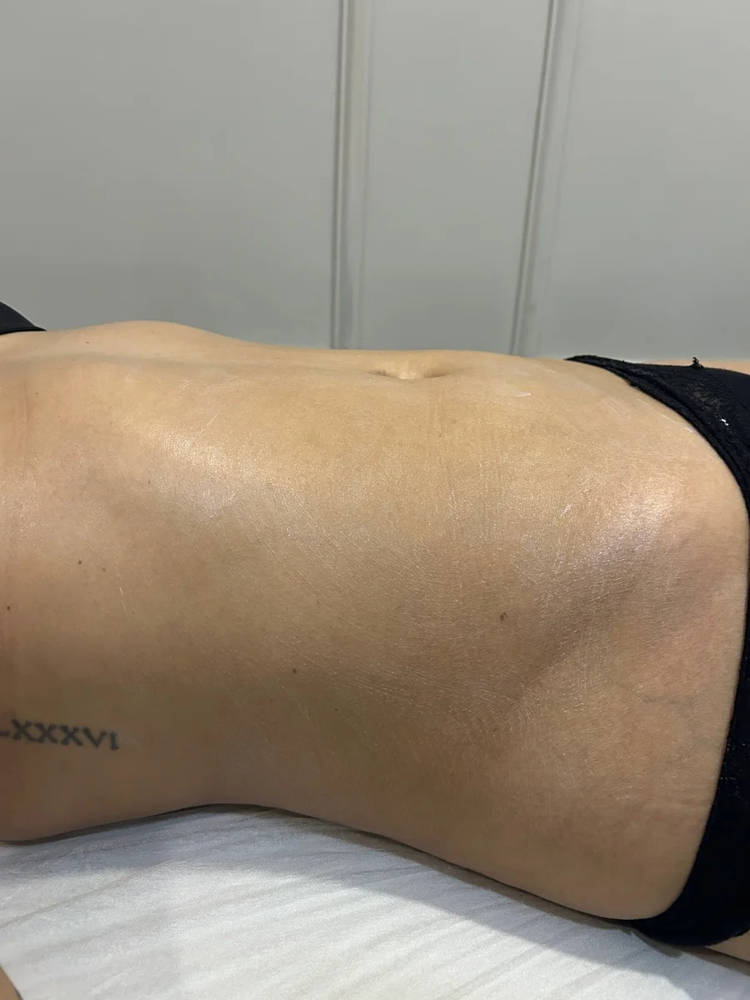
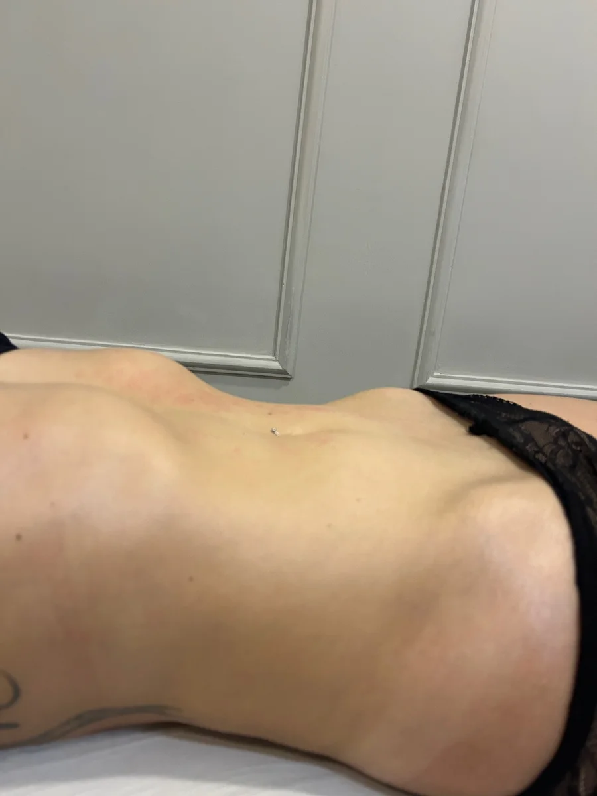
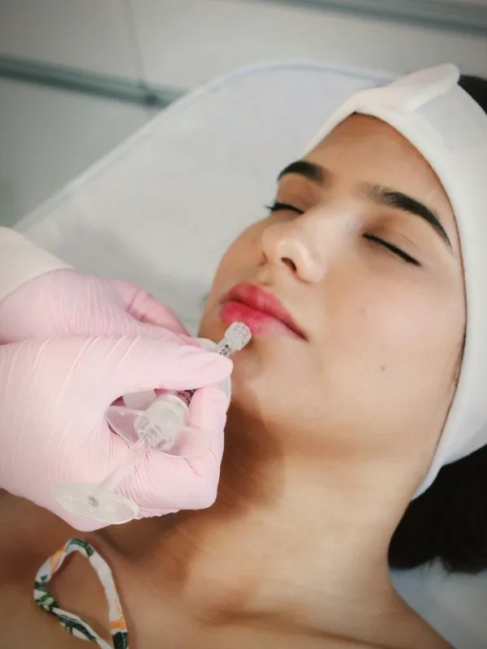
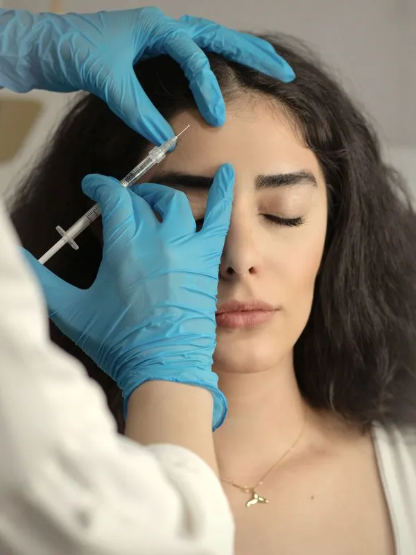

- Início
- Tratamentos
- Drenagem linfática
Drenagem linfática.
Massagem que estimula a circulação e ajuda a aliviar a retenção de líquidos.
Pelo Wellhub: 3 check-ins

no Google
Movimentos suaves e ritmados.
A drenagem linfática é uma massagem de movimentos suaves e ritmados, que acompanham o caminho do sistema linfático. É procurada por quem sente o corpo inchado ou pesado, e também entra nos protocolos de contorno.
A frequência depende do seu objetivo: tem cliente que faz drenagem com a Ana há meses, como contam as avaliações do Google, e tem quem faça em períodos específicos.
O tratamento em imagens.
Fotos de clientes do estúdio. Resultados variam de pessoa para pessoa. Toque numa foto para ampliar.

Antes, abdômen, foto do estúdio
Depois, abdômen, foto do estúdio
Antes e depois, abdômen, foto do estúdio
Abdômen, foto do estúdio
Abdômen, foto do estúdio- Mais no Instagram Resultados de clientes, protocolos e bastidores no @anaflaviaaraujoestetica. Ver o perfil


Do primeiro contato ao seu protocolo.
Conversa pelo WhatsApp
Agende pelo WhatsApp, no particular ou pelo Wellhub. O horário fica reservado para você.
Avaliação
No estúdio, ela avalia a região e entende o seu objetivo antes de indicar qualquer coisa.
Sessões no seu ritmo
A frequência é combinada com você, conforme o objetivo e a sua rotina.
Drenagem linfática pelo Wellhub.
Seu plano Wellhub também vale aqui, sempre com horário agendado. Até 8 check-ins por mês.
- Gold+
- Platinum
- Diamond
- Diamond+
Confira as regras do seu plano no app do Wellhub.
Quem já fez conta como foi.
Excelente. Serviço de boa qualidade e bons resultados. Faço drenagem com Ana desde de Novembro e hoje vejo o quanto meu corpo se mantém leve com minimo de retenção. O que antes me incomodava muito.
Melhor drenagem que já fiz aqui em Itabira, além de atendimento impecável e ambiente acolhedor!!
Também no estúdio.
 Alta tecnologiaEndolift
Alta tecnologiaEndolift CorpoHarmonização corporal
CorpoHarmonização corporal CorpoFlacidez, celulite e estrias
CorpoFlacidez, celulite e estrias CorpoMassagem redutora
CorpoMassagem redutora- CorpoHarmonização íntima
 RostoEstética facial
RostoEstética facial
RostoPreenchimento labial
RostoBotox
Não achou o que procura? Pergunte pelo WhatsApp: os protocolos são montados para cada pessoa.
Antes de agendar.
Atende pelo Wellhub?
Sim, nos planos Gold+, Platinum, Diamond e Diamond+. A drenagem usa 3 check-ins, com até 8 check-ins por mês. Confira as regras do seu plano no app.
Com que frequência fazer?
Depende do seu objetivo. A Ana indica a frequência depois de conversar com você.
Qual a diferença para a massagem redutora?
A drenagem tem movimentos suaves e ritmados, voltados à retenção de líquidos. A redutora é firme e modeladora, voltada ao contorno. A Ana indica qual faz mais sentido para você, ou como combinar as duas.
Onde fica e qual o horário?
Rua Suzinha de Sá Martins, 201, loja 5, Esplanada da Estação, em Itabira. Segunda das 13h às 19h, terça e quarta das 8h às 19h, quinta das 8h às 18h, sexta das 8h às 19h e sábado das 8h às 13h.
Agende a sua drenagem.
Particular ou pelo Wellhub, sempre com horário marcado.